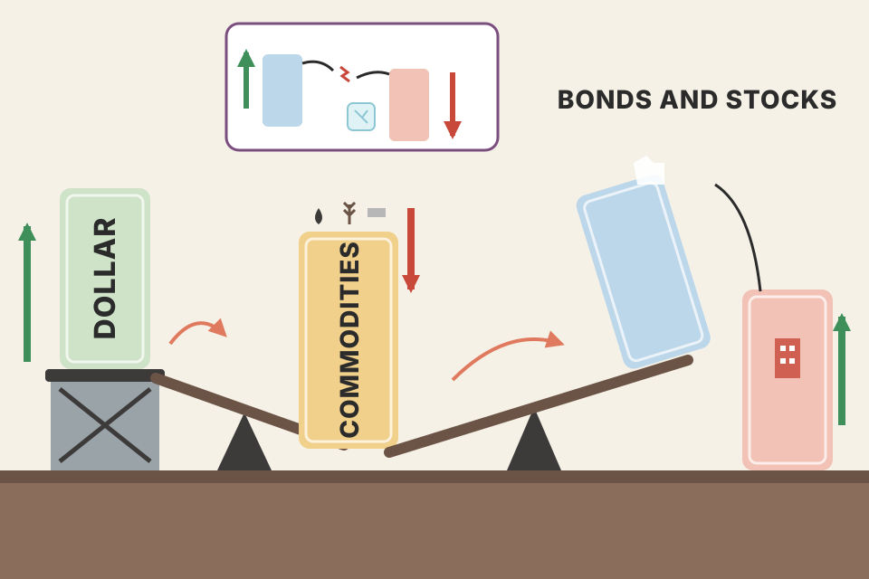
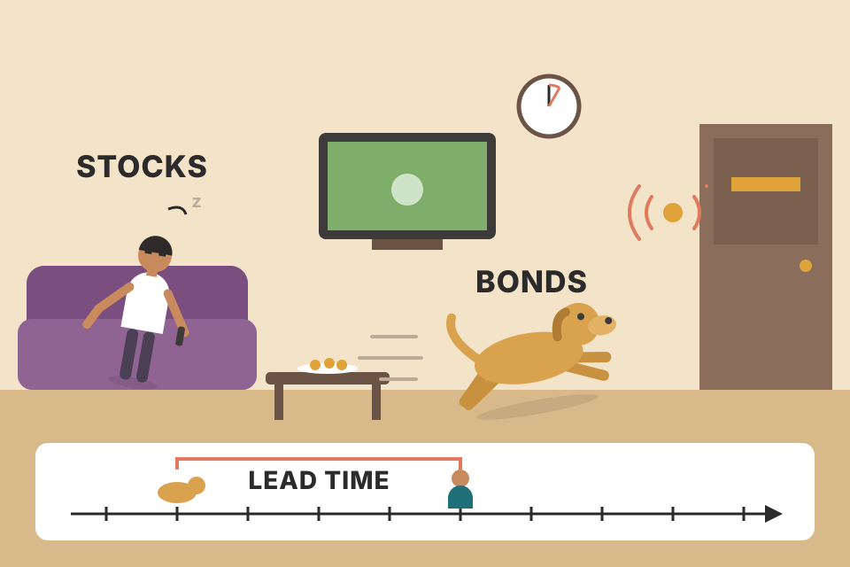
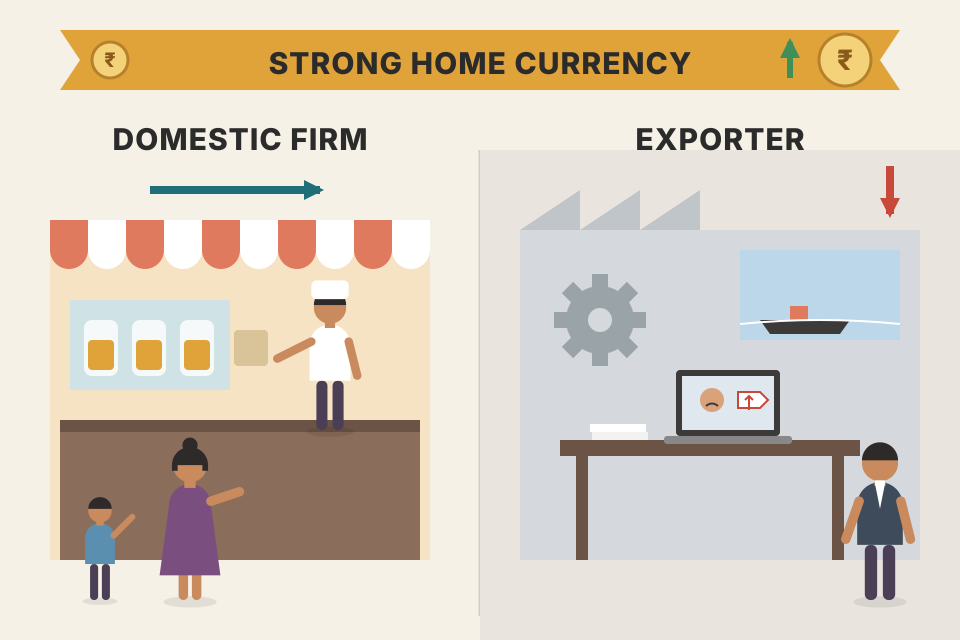
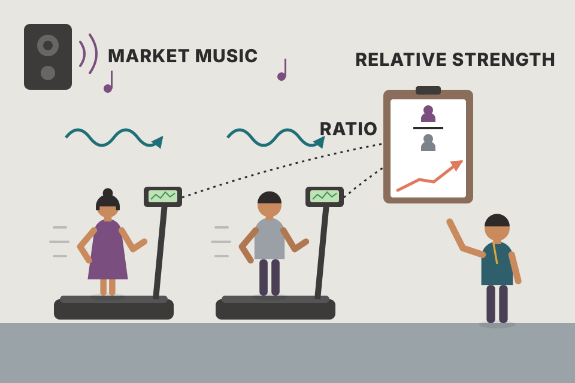

The dollar moves commodities, commodities move bonds, bonds move stocks, and inside the stock market money rotates between sectors. This chapter shows those links one by one, then gives you one simple tool, the ratio chart, to see which market, sector or stock is winning. Every section below follows the book's order. All charts run on one simulated "world" of linked markets, not real data; the links and lead times were built in on purpose so you can see what the words mean. The pooled tests (sections 04, 14, 15) re-run the same generator on many worlds (67 or 100, stated each time) so no single lucky world can make a point.
Murphy's chain runs in one direction, and everything else hangs off it:
By the book's first edition (1986) the wall between commodity futures and the traditional world of stocks and bonds was already coming down. Twenty years before Murphy wrote this edition, "commodities" meant things grown, mined or refined: corn, soybeans, pork bellies, gold, oil. Between 1972 and 1982 futures arrived on currencies, Treasury Bonds and stock indexes. Bonds and stocks were hardly commodities, but they were futures contracts, so the word "futures" took over. Since then the two worlds have blended so much they can hardly be separated, and the technical methods used on them have become more universal.
On any day you can get quotes for dollar, bond and stock-index futures, and they often move in sync, often pushed by what happens in the commodity pits. Program trading, triggered when S&P 500 futures get out of line with the cash index, is a daily reality. So, Murphy argues, the better you understand futures, the more insight you get into the whole financial marketplace. Futures also influence the stock market more deeply:
The chapter's main message: how closely the four markets (currencies, commodities, bonds, stocks) are linked, and how to use futures in sector and industry rotation.
In 1991 Murphy wrote Intermarket Technical Analysis, a blueprint for the sequence that develops among markets and how interdependent they are. Its basic premise: all financial markets are linked in some way, international as well as domestic. The relationships can shift at times, but they are always there in some form. So you can't fully understand one market, such as stocks, without some understanding of the others. That gives the technical analyst a big advantage: the same chart tools work on every market, so following many markets at once is practical.
The chain he spells out (p467): the dollar influences commodities, which influence bonds, which influence stocks. To understand any one of them you need to know what the other three are doing, and the easiest way is to look at their price charts.

A row of dominoes, but some are linked by a see-saw. Push the dollar up and the see-saw tips commodities down; commodities going down tips bonds up; bonds pull stocks up with them. In deflation the last link snaps: bonds can rise while stocks fall.
The economic story Murphy tells across the chapter: commodities are an early sign of inflation; inflation is bad for bond prices (yields rise); higher rates are bad for stocks; and a strong dollar is non-inflationary, so it pushes commodities down. Each link is a tendency, not a law, and the lead times shift.
The tightest link between stocks and futures is between the S&P 500 cash index and the S&P 500 futures contract. Normally the futures trade at a premium to the cash index. Its size depends on the level of short-term interest rates, the yield on the S&P 500, and the number of days until the contract expires. The premium shrinks as expiration approaches (Fig 17.1: it narrows as the March contract nears expiry).
Each day institutions work out what the premium should be: fair value. It stays the same through the trading day and changes gradually from day to day.
Most traders know this. What they often miss: the sudden moves in S&P futures that trigger program trading are often caused by sudden moves in other futures markets, like bonds.
The same item sold in two shops across the street, one for cash today (the stocks) and one for collection in two months (the futures). The two-month price is a bit higher because the seller's money is tied up. If it gets too much higher, traders buy in the cash shop and sell in the other until the gap closes. On collection day the two prices must match.
Murphy names the three inputs but no formula. The standard cost-of-carry version, used in this simulation: fair premium ≈ cash index × (short-term rate − dividend yield) × days to expiry ÷ 365. Raise the rate slider and the premium grows; at expiry (days = 0) it must be zero. In India the same mechanism links Nifty futures to the Nifty spot index.
In the lower panel, the line labelled "actual premium (futures − cash)" is what the market pays; the solid "fair value" line with the two dashed lines around it is fair value ± your trigger. Random shocks (think "a sudden move in bonds") push the premium outside the band. Each time, a green ▲ (program buying) or red ▼ (program selling) appears on the futures line, and the arbitrage pulls the premium back. Widen the trigger and programs fire less often.
Cash index 1000, short-term rate 5%, index yield 1.5%, 60 days to expiry. Fair premium = 1000 × (0.05 − 0.015) × 60 ÷ 365 = 1000 × 0.035 × 0.1644 ≈ 5.75 points, so fair futures ≈ 1005.75. Thirty days later (index still 1000) it is half that, 2.88; on expiry day it is 0. Now say the futures trade at 1009.25: 3.5 points above fair value. With a 1.5-point trigger that fires program buying: sell the futures, buy the stocks. Why 3.5 points is a sure profit is shown below.
The trader holds two positions that cancel each other's market risk. If the index ends high, the stock basket gains exactly what the short futures lose (on expiry day futures = cash, so both settle at the same number). Slide "index on expiry day" from 850 to 1150 and the net line does not move. What is left is fixed at the start: the dividends earned on the stocks, minus the interest paid to fund them, plus the gap between the futures price and the cash price. That adds up to exactly the mispricing. This is why futures can't drift far from fair value for long, and why the trigger exists: the locked-in gap must beat commissions, the cost of buying 500 stocks at once, and the risk that dividends or the funding rate differ from the plan. The table assumes those costs are zero, the funding rate equals the short-term rate, and dividends are known. Set the mispricing negative and the same table shows program selling: sell the basket, buy the futures.
Stocks are influenced by the direction of interest rates, which can be tracked minute by minute through Treasury Bond futures. Bond prices move opposite to interest rates (yields). So rising bond prices = falling yields, normally positive for stocks; falling bond prices = rising yields, negative for stocks. Compare the charts and you'll see they've generally trended the same way.

Bonds are the dog that hears the doorbell first; stocks are the owner who gets up a few seconds later. Watch the dog and you know the owner is about to move.
This simulated world was built with bonds turning about 8 days before stocks. Slide the bond line forward and watch the match score peak near that lead: that's what "leading indicator" means. It is not evidence (I put the lead there); in real markets the lead varies and sometimes disappears.
For every day, take each market's change over the previous 20 days, say bonds +2.1% and stocks +1.4%. That gives two long lists of 20-day changes. The score is the correlation between the two lists (section 15 explains correlation): +1 if every bond move is matched by a same-sized stock move, 0 if there is no relation. Shifting the bond line forward by L days pairs the bond change ending on day t − L with the stock change ending on day t. If bonds really lead by 8 days, the pairs line up best at L = 8 and the score peaks there. Pooled check, 100 simulated worlds: without the deflation shock the best shift came out at 8 days in 62 worlds and between 7 and 9 in 91; the average score rose from 0.77 at no shift to 0.93 at the best one. With the shock on, 8 days came out in only 44 worlds and the answers spread from 4 to 13 days. Even a lead that was built in is measured with noise, and a change of regime blurs it. That is the realistic way to read a "bonds lead by X days" claim.
Treasury Bond prices depend on expectations for inflation, and commodity prices are considered leading indicators of inflation. So commodities usually trend opposite to bonds. Since the 1970s, sudden upturns in commodities (signalling inflation) have usually come with falling bond prices, and strong bond rallies with falling commodities. Fig 17.3 (CRB Index vs T-Bonds): the bond bottoms in spring 1996 and 1997 coincided with major peaks in commodity prices. Commodities, in turn, are driven by the direction of the U.S. dollar.
A bond is a fixed stream of payments. If bread, fuel and metal get dearer (commodities up), those fixed payments buy less, so nobody wants to pay as much for the bond. Its price drops.
The dotted lines mark the commodity index's major peaks in this simulation. Bond bottoms land within a few days of them, the pattern in Fig 17.3. The readout measures how often the two moved in opposite directions over 20-day stretches.
Murphy states the rule (section 04: bond prices move opposite to yields); here is the arithmetic. A bond pays a fixed coupon every year and 100 back at the end. Its price is what those fixed payments are worth today, discounted at the going yield. If new bonds pay more, old ones must get cheaper until their buyer earns the same. Move the slider.
A 30-year bond with a 6% coupon pays 6 a year and 100 at the end. At a 6% market yield its price is exactly 100. Commodities rally, inflation fears push yields to 7%: price = 6 × (1 − 1.07−30) ÷ 0.07 + 100 ÷ 1.0730 = 74.45 + 13.14 ≈ 87.59, a 12.4% loss from a one-point rise in yield. If yields fall to 5% instead, the price rises to about 115.37. A 10-year bond moves less (92.98 and 107.72) because fewer fixed payments are being re-priced. That's the chain in numbers: commodities up → inflation expected → yields up → bond prices down.
A rising U.S. dollar normally depresses most commodity prices; a rising dollar is considered non-inflationary. Fig 17.4 (CRB vs Dollar Index): in 1980 the dollar's bottom coincided with a major commodity peak, and the 1995 dollar bottom contributed to a sharp commodity decline a year later.
Gold is one of the commodities most affected by the dollar: over time gold and the dollar usually trend in opposite directions (Fig 17.5). Gold, in turn, usually leads other commodities. So to analyse gold you need to know what the dollar is doing, and to judge the general commodity trend (e.g. the CRB index) you need to know what gold is doing. That completes the chain: dollar → commodities → bonds → stocks.
Commodities are priced in dollars. When the dollar gets stronger, the same barrel of oil or ounce of gold needs fewer dollars, so its dollar price tends to fall. Gold, the most "money-like" commodity, reacts first, and the rest follow. (Murphy states the link and gold's lead; the pricing-in-dollars reason is not in the book.)
Say gold is $380 an ounce and one dollar buys 1.60 Deutschemarks, so a German buyer pays 380 × 1.60 = 608 DM. The dollar now rises 10%, to 1.76 DM. If gold's price in DM stayed at 608, its dollar price would be 608 ÷ 1.76 = $345.45, a fall of about 9.1%, with nothing happening to gold itself. In practice the move splits: some of it shows up as a lower dollar price, some as a higher price for foreign buyers, who then buy less. Either way, a stronger dollar leans on dollar commodity prices, which is the link in Fig 17.4 and 17.5.
The simulated gold line turns a few days before the commodity index, and both move against the dollar. The readout scores the lead the same way as section 04. (Real lead times vary; this one was built in.)
The stock market is divided into sectors, then industry groups, and these respond to the intermarket picture:
Sectors and their related futures can be used together. Utilities are closely linked to Treasury Bond prices, and often turn a little before bonds (Fig 17.6, PHLX Utility Index). Gold mining shares are closely linked to gold. The stock groups often lead their futures markets: utilities can be leading indicators for bonds, gold shares for gold. Another example: oil prices and energy and airline stocks. Rising oil helps energy shares but hurts airlines; falling oil does the opposite.
A utility is like a bond with a building attached: steady payouts, lots of borrowing. When interest rates fall, its payouts look better and its borrowing gets cheaper, so it rises with bonds. A gold miner is like gold with a mine attached: when gold moves, the miner's profit moves even more. (These reasons are not in the book; Murphy gives the links, not the why.)
A very strong dollar can hurt large multinational companies by making their products too expensive abroad. More domestic small-cap companies are less affected by the dollar and may even do better than large ones when it's strong. So a stronger dollar may favour smaller stocks (like those in the Russell 2000), and a weaker dollar may benefit the large multinationals (like those in the Dow Industrial Average).

A local bakery and an exporter of machines. When the home currency gets expensive, foreign buyers find the machines pricier and buy fewer; the bakery's customers are all local and barely notice.
These relationships help mutual-fund investors too. The dollar's direction might shape how much you put in small-cap vs large-cap funds, or how much goes into gold or natural-resource funds. The huge number of sector funds actually makes choosing harder. The job gets much easier if you compare the relative performance of the futures markets and the stock sectors and industry groups, with a simple charting method: relative strength analysis.
index_funds.md covers Indian factor index funds such as the Nifty 200 Momentum 30, a ready-made way to hold a relative-strength basket.An extremely simple but effective tool: divide one market by another and plot the ratio. When the ratio line rises, the top market (numerator) is stronger; when it falls, the bottom market (denominator) is stronger.
Example: divide a commodity index (such as the CRB Futures Price Index) by Treasury Bond futures (Fig 17.7).
| Day | CRB | T-Bond | Ratio CRB ÷ bond | Reading |
|---|---|---|---|---|
| 1 | 230.0 | 112.0 | 2.054 | start |
| 2 | 232.3 | 112.6 | 2.063 | both up, CRB faster: ratio up |
| 3 | 233.5 | 114.3 | 2.043 | both up, bonds faster: ratio down |
| 4 | 231.2 | 115.4 | 2.003 | CRB down, bonds up: ratio down hard |
| 5 | 229.0 | 115.0 | 1.991 | both down, CRB faster: ratio down |
Over the five days the ratio fell 3.0% (1.991 ÷ 2.054), even though bonds and commodities were both up on day 3. Murphy's reading: bonds are winning, so favour bonds and rate-sensitive stocks. The ratio's direction is the whole message; its level (about 2) means nothing on its own, which is why the chart above rebases it to 1 at the start.

Two runners on treadmills that both speed up and slow down with the gym's music. Their speeds alone tell you little. Divide one runner's distance by the other's and you see who's actually pulling ahead.
The ratio strips out whatever moves both markets together and leaves only the difference. Because it's just another price series, every tool in the book works on it: here a moving average, and in section 11 trendlines. A falling ratio can still mean both markets are rising, just the bottom one faster.
intraday_swing_playbook.md) also watches the ratio/spread of two related stocks, but bets on it snapping back (mean reversion). Murphy reads the ratio's trend and goes with it. Your pairs backtest lost even before costs (backtest_results_summary.md).Many exchanges trade index options on stock sectors. The Chicago Board Options Exchange had the widest choice, including automotive, computer software, environmental, gaming, real estate, healthcare, retail and transportation. The American and Philadelphia Stock Exchanges offered popular ones on banks, gold, oil, pharmaceuticals, semiconductors, technology and utilities. All of them can be charted like any market.
The best way to use relative strength on them: divide each by a benchmark such as the S&P 500. A rising RS line means the sector is outperforming the market; a falling one, underperforming. Simple tools like trendlines and moving averages on the RS lines help spot changes in their trend (Fig 17.9: a trendline on the PSE High Tech/S&P ratio caught the tech downturn in October 1997 and the upturn at year-end). The idea is to rotate funds into sectors whose RS lines are just turning up, and out of those just turning down, using the index options themselves or mutual funds that match the sectors.
The lower panel is the sector ÷ stock index, with a 30-day average on it. A green ▲ on the sector line marks a day the RS line crosses up through its average ("just turning up": rotate in); a red ▼ marks a cross down (rotate out). Using a moving-average cross as the "turn" is this page's choice; Murphy says trendlines and moving averages on the RS line help, without a fixed rule. The readout ranks all simulated sectors by their RS change over the last 20 days. Notice how the rate-sensitive and inflation-sensitive groups mirror each other, because this world was built on section 07's rules.
backtest_results_summary.md). Ranking stocks by their own return gives the same order as ranking their RS lines against any common benchmark, because dividing every stock by the same index doesn't change who's ahead. The volatility divisor is the part Murphy's ratio doesn't have.Investors can stop at rotating between groups, or go on to pick individual stocks within them, again with relative strength. Once you've chosen the index, divide each stock in it by the index itself; the stocks with the greatest relative strength stand out. You can buy the stocks with the strongest ratio lines, or a cheaper stock whose ratio line may just be turning up. The point is to avoid stocks whose RS lines are still falling. Fig 17.10: a ratio of Dell Computer to the PSE High Tech Index at the end of 1997 (with a marked relative-strength breakout) showed Dell to be one of the better picks in the tech sector.
Five simulated tech stocks, each divided by the simulated tech index. A relative-strength breakout (marked) is the first close of the ratio above its highest level of the previous 40 days (at most one signal every 15 days), the same breakout idea as on a price chart. The 40-day rule is this page's choice; Murphy's Fig 17.10 just marks the ratio rising above an earlier high. The ranking shows which stocks have strong, turning-up or still-falling ratio lines.
What sections 10–12 describe is a top-down approach:
Adding intermarket principles tells you whether the climate favours bonds, commodities or stocks, which helps asset allocation. The same method works internationally by comparing the relative strength of global stock markets. Finally, the same tools can be applied to mutual fund charts as a last check. All of it is easy with price charts and a computer; imagine trying fundamental analysis on that many markets at once.
backtest_results_summary.md). Your momentum rotation is steps 2–3 done with numbers.The intermarket principles are based on market trends since 1970. The 1970s had runaway inflation, which favoured commodities. The 1980s and 1990s had falling commodity prices (disinflation) and strong bull markets in bonds and stocks. In the second half of 1997 a severe downturn in Asian currency and stock markets hit markets like copper, gold and oil. For the first time in decades, observers worried that beneficial disinflation (prices rising more slowly) might turn into harmful deflation (prices falling). Producer prices fell on an annual basis for the first time in more than a decade. Bonds and stocks began to decouple: for the first time in four years, investors switched out of stocks into bonds and rate-sensitive groups like utilities.
That shift happened because deflation changes the scenario. The inverse link between bonds and commodities holds (commodities fall, bonds rise), but the stock market can react negatively. Murphy flags this because markets hadn't had to deal with price deflation for a long time: if it does come, the intermarket relationships will still be there, but in a different form.
| Environment | Commodities | Bonds | Stocks |
|---|---|---|---|
| Inflation (1970s) | favoured | not stated here (by the chain: hurt) | |
| Disinflation (1980s–90s) | bad | good | good |
| Deflation | bad | good | may be bad |
The deflationary trend that began in Asia in mid-1997 spread to Russia and Latin America by mid-1998 and hurt all global equity markets. The plunge in commodities especially damaged commodity exporters like Australia, Canada, Mexico and Russia. Falling commodity and stock prices were good for Treasury bonds, which hit record highs. The 1998 events were a dramatic example of global intermarket links, and of how bonds and stocks can decouple in a deflationary world.
Normally falling rates are a tailwind for stocks: cheaper borrowing, better valuations. In deflation, rates fall because the economy is shrinking and prices are dropping. The tailwind is there, but the engine (company profits) is failing, so stocks can sink while bonds soar. (This explanation is not in the book; Murphy describes what happened, not why.)
Ticking the box adds a slow push on every simulated market over the last third: commodities and gold down, bonds and utilities up, stocks down. In a test over 67 simulated worlds, bonds ended the last third higher and stocks lower in 60 of them; in the other 7 the normal inflation swings outweighed the shock. That is what was built in, not evidence about real deflations.
Markets that normally trend the same way, like bonds and stocks, are positively correlated. Markets that trend in opposite directions, like bonds and commodities, are negatively correlated. Charting software can measure the degree: a high positive reading means a strong positive link, a high negative reading a strong negative link, and a reading near zero little or no link. Measuring it tells you how much weight to give a particular relationship: more weight to high correlations, less to those near zero. Fig 17.11: the positive correlation between T-bond prices and the S&P 500; in the second half of 1997 the Asian crisis caused an unusual decoupling as investors bought bonds and sold stocks.
Murray Ruggiero Jr., in Cybernetic Trading Strategies, did creative work on intermarket correlations and on using intermarket filters in trading systems. For example, he showed how a moving-average crossover system in the bond market can be used as a filter for trading stock indexes. He also explored artificial-intelligence methods (chaos theory, fuzzy logic and neural networks) for building trading systems, and neural networks for intermarket analysis.
Murphy doesn't give a formula. The usual one is Pearson's correlation: over the window, line up the two series, measure how far each day sits from its own average, and check how often (and how strongly) the two are on the same side at the same time. It runs from −1 (perfect opposites) through 0 (no link) to +1 (perfect twins). You can feed it two different things, and the "measured on" switch shows both:
Tick the deflation box in section 14 and the bonds-and-stocks line drops in the shaded zone: the 1997 "decoupling", simulated. Pooled check, 67 simulated worlds, 60-day window. On price levels the line went below zero somewhere in the shaded zone in 51 worlds with the shock and 21 without it; its average in the zone (median across worlds) fell from 0.75 to 0.51. On 20-day changes it went below zero in 32 worlds with the shock and 23 without; zone average 0.67 → 0.59. The shock in this world is a slow push, so levels catch it and changes mostly don't. In real markets a decoupling can be either kind, which is a reason to look at both and to weigh a link, as Murphy says, by how strong and how steady its correlation is.
using_equations_to_trade.md pass test asks for a higher Sharpe than the Nifty "or low correlation to the index".Ruggiero's example, a bond-market moving-average system used as a filter on stock-index trades, can be tried on this page. Murphy gives the idea, not the rules, so the rules below are this page's choice (not Ruggiero's and not Murphy's): be long the stock index only while it closes above its own moving average, and with the filter, only while bonds also close above theirs. Out of the market means in cash at 0%. Each switch in or out costs the amount you set.
The bottom panel shows when each rule is in the market. The bond rule tends to step in and out earlier than the stock rule, because this world was built with bonds turning about 8 days before stocks (section 04). The pooled test separates where the advantage comes from. At the default settings (50/40 days, 0.1% per switch), over 100 worlds without the shock: buy and hold averaged +15.7%, the stock rule +33.6%, the stock rule with the bond filter +47.3%, and the bond rule alone +60.0%; the filter beat the plain stock rule in all 100 worlds. In the pooled table, the no-lead control rows (bonds rebuilt to turn on the same day as stocks) show the bond rule's average dropping to +40.3%, beating the stock rule in 82 worlds, not 100. So roughly three quarters of its extra return was the built-in lead; the rest is that this world's bond line is smoother (less noise to whipsaw a moving average). Every trend rule beats buy and hold here because the world is made of slow cycles; compare the rules with each other, not with buy and hold.
The filter assumes "bonds up = good for stocks". In deflation that assumption breaks (section 14): bonds rise while stocks fall, so the bond rule stays long into the decline. Pooled over the same 100 worlds, in the last third (where the shock sits) the bond rule's average return fell from +21.5% to +6.9% with the shock on, and it beat the plain stock rule there in 80 worlds instead of 99. The filtered rule fell from +17.7% to +4.8%. The filter still helped on average here because the shock is gentle and the built-in lead is strong. With real money the lesson is Murphy's: an intermarket filter is only as good as the relationship under it, so keep measuring that relationship (the correlation chart above) and stand aside when it breaks.
backtest_results_summary.md). A bond or rate filter is the intermarket version of it; test it the same way, on data it was not tuned on (Chapter 9's optimisation warning).One big problem with intermarket work: there are so many relationships, all interacting at once. Neural networks offer a more quantitative framework for finding and tracking these complex relationships. Louis Mendelsohn, president of Market Technologies Corporation (the book prints the firm's 1990s contact details, in Wesley Chapel, Florida, and its ProfitTaker.com website), was the first to develop intermarket analysis software in the financial industry, in the 1980s, and Murphy calls him the leading pioneer in applying microcomputer software and neural networks to intermarket analysis. His VantagePoint software, first introduced in 1991, uses intermarket principles to trade interest-rate markets, stock indexes, currency markets and energy futures, with neural network technology to detect hidden patterns and correlations between related markets.
Each line is a weight the network learns from history: how much each related market should count, in combination, for the forecast. That's the "hidden patterns and correlations" idea. The risk is the same as optimisation in Chapter 9: with many weights and few independent market cycles, a network can learn the past's noise. Test it on data it never saw.
backtest_results_summary.md).The chapter summarises Murphy's Intermarket Technical Analysis: the ripple effect from the dollar to commodities to bonds to stocks. Intermarket work also recognises global linkages: what happens in Asia, Europe and Latin America affects U.S. markets, and vice versa. It sheds light on sector rotation inside the stock market, and relative strength helps find the asset classes, sectors or stocks likely to beat the market.
In Leading Indicators for the 1990s, Dr. Geoffrey Moore shows that the interaction between commodity, bond and stock prices follows a sequence that tracks the business cycle. He supports the rotation among the three asset classes and argues for using it in economic forecasting, which lifts intermarket work, and technical analysis generally, into economic forecasting.
Finally, technical analysis works on mutual funds like any other market (with minor changes), so every technique in the book can be applied to fund charts. Their lower volatility even makes them excellent for chart analysis. Murphy's later book The Visual Investor goes further into sector analysis and charting funds. Fig 17.12: on a Fidelity Southeast Asia fund chart, a break below support was visible without being a chart expert: Asia was heading for trouble.
Dollar → commodities (opposite) → bonds (opposite) → stocks (same direction, normally). Sections 02, 04–06.
Program buying: sell the futures, buy the basket of stocks. Buying the stocks pushes the cash index up (positive for the market). Section 03.
Murphy: short-term interest rates, the S&P 500's yield, and days to expiration; it shrinks toward zero as expiration approaches. With the standard cost-of-carry formula (not in the book): 1000 × 0.035 × 60/365 ≈ 5.75 points. The hedged trader's stock gains and futures losses cancel, because futures and cash settle at the same price on expiry day; what's left is dividends − funding + (futures − cash) = the 3.5-point mispricing, before costs. Section 03.
Yields are falling, normally positive for stocks. Bonds often lead stocks at turns. Section 04.
Usually fall: commodities signal inflation, and inflation hurts bond prices. Section 05.
Gold. It usually trends opposite to the dollar and usually leads other commodities. Section 06.
Favour utilities, financials, consumer staples (rate-sensitive); avoid gold, energy, cyclicals (inflation-sensitive). Section 07.
The Russell 2000 small caps may be favoured; a weaker dollar helps the multinationals. Section 08.
Selling commodities, buying bonds; stock investors selling golds, oils and cyclicals and buying utilities, financials and consumer staples. Section 10.
Divide each sector by a benchmark like the S&P 500, use trendlines and moving averages on the RS lines, and rotate into sectors whose RS lines are just turning up and out of those just turning down. Section 11.
Bonds and stocks decouple: commodities fall and bonds rise as usual, but stocks may fall too. Disinflation: good for bonds and stocks. Deflation: good for bonds, bad for commodities, may be bad for stocks. A bond filter keeps you long while bonds rise, so in deflation it can keep you long into a falling stock market; on this page's simulation its last-third return dropped sharply once the shock was on. Sections 14, 15.
The +0.8 one. Murphy: more weight on higher correlations, less on those near zero. But two markets that both happen to trend over the window show a high correlation of levels even if their day-to-day moves are unrelated; check the correlation of their changes too, and whether the reading is steady over time (beyond the book). Section 15.
Often in another futures market, such as bonds: sudden S&P futures moves that trigger programs are often caused by sudden moves elsewhere. Watching only stocks misses the trigger, which is the chapter's whole point. Sections 03–04.
Utilities. They are closely linked to bond prices and often turn a little before bonds (Fig 17.6), so they can act as leading indicators for bonds, just as gold mining shares can for gold. Section 07.
Down (1.04 ÷ 1.06 ≈ 0.981, about −1.9%): bonds were stronger even though both rose. A falling ratio favours bonds and the rate-sensitive groups (utilities, financials, consumer staples) over golds, oils and cyclicals. The ratio measures relative, not absolute, strength. Section 10.